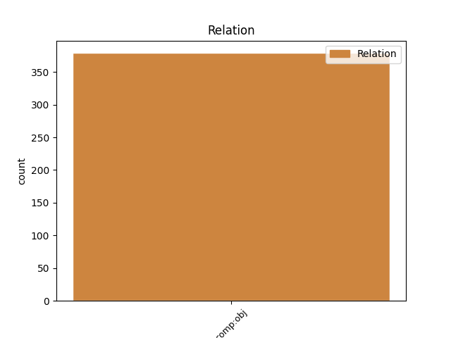
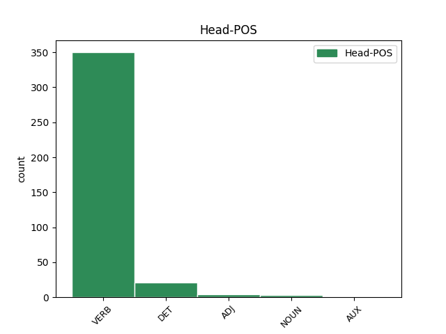
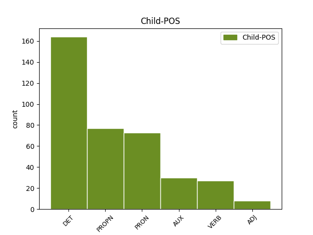

Distribution of features within this leaf



Agreement Rules sorted by frequency.
- When the dependent token is the direct object complements(comp:obj) of the head token, and the dependent token is DET.
1 Hakeri _ _ _ _ 0 _ _ _
2 koji _ _ _ _ 0 _ _ _
3 se _ _ _ _ 0 _ _ _
4 služe _ _ _ _ 0 _ _ _
5 društvenim _ _ _ _ 0 _ _ _
6 inženjeringom _ _ _ _ 0 _ _ _
7 odnosno _ _ _ _ 0 _ _ _
8 manipulacijama _ _ _ _ 0 _ _ _
9 tako _ _ _ _ 0 _ _ _
10 su _ _ _ _ 0 _ _ _
11 između _ _ _ _ 0 _ _ _
12 ostalog _ _ _ _ 0 _ _ _
13 došli _ _ _ _ 0 _ _ _
14 i _ _ _ _ 0 _ _ _
15 do _ _ _ _ 0 _ _ _
16 lozinke _ _ _ _ 0 _ _ _
17 za _ _ _ _ 0 _ _ _
18 pristup _ _ _ _ 0 _ _ _
19 poverljivim _ _ _ _ 0 _ _ _
20 stranačkim _ _ _ _ 0 _ _ _
21 mejlovima _ _ _ _ 0 _ _ _
22 američke _ _ _ _ 0 _ _ _
23 Demokratske _ _ _ _ 0 _ _ _
24 stranke _ _ _ _ 0 _ _ _
25 , _ _ _ _ 0 _ _ _
26 koje koji DET Pi-fpa Case=Acc|Gender=Fem|Number=Plur|PronType=Int,Rel 30 comp:obj _ _
27 su _ _ _ _ 0 _ _ _
28 zatim _ _ _ _ 0 _ _ _
29 i _ _ _ _ 0 _ _ _
30 objavili objaviti VERB Vmp-pm Gender=Masc|Number=Plur|Tense=Past|VerbForm=Part|Voice=Act 0 _ _ _
31 usred _ _ _ _ 0 _ _ _
32 kampanje _ _ _ _ 0 _ _ _
33 predstavnice _ _ _ _ 0 _ _ _
34 ove _ _ _ _ 0 _ _ _
35 stranke _ _ _ _ 0 _ _ _
36 na _ _ _ _ 0 _ _ _
37 izborima _ _ _ _ 0 _ _ _
38 za _ _ _ _ 0 _ _ _
39 predsednika _ _ _ _ 0 _ _ _
40 SAD _ _ _ _ 0 _ _ _
41 2016. _ _ _ _ 0 _ _ _
42 godine _ _ _ _ 0 _ _ _
43 Hilari _ _ _ _ 0 _ _ _
44 Klinton _ _ _ _ 0 _ _ _
45 . _ _ _ _ 0 _ _ _
1 Tako _ _ _ _ 0 _ _ _
2 sam _ _ _ _ 0 _ _ _
3 pre _ _ _ _ 0 _ _ _
4 dve _ _ _ _ 0 _ _ _
5 decenije _ _ _ _ 0 _ _ _
6 , _ _ _ _ 0 _ _ _
7 u _ _ _ _ 0 _ _ _
8 jednoj _ _ _ _ 0 _ _ _
9 bečkoj _ _ _ _ 0 _ _ _
10 knjižari _ _ _ _ 0 _ _ _
11 , _ _ _ _ 0 _ _ _
12 otkrio otkriti VERB Vmp-sm Gender=Masc|Number=Sing|Tense=Past|VerbForm=Part|Voice=Act 0 _ _ _
13 Zebalda Zebald PROPN Npmsay Animacy=Anim|Case=Acc|Gender=Masc|Number=Sing 12 comp:obj _ SpaceAfter=No
14 . _ _ _ _ 0 _ _ _
1 Tragajući _ _ _ _ 0 _ _ _
2 za _ _ _ _ 0 _ _ _
3 smislom _ _ _ _ 0 _ _ _
4 našeg _ _ _ _ 0 _ _ _
5 boravka _ _ _ _ 0 _ _ _
6 na _ _ _ _ 0 _ _ _
7 ovom _ _ _ _ 0 _ _ _
8 svetu _ _ _ _ 0 _ _ _
9 , _ _ _ _ 0 _ _ _
10 knjige _ _ _ _ 0 _ _ _
11 jesu _ _ _ _ 0 _ _ _
12 putokazi _ _ _ _ 0 _ _ _
13 koji _ _ _ _ 0 _ _ _
14 nas mi PRON Pp1-pa Case=Acc|Number=Plur|Person=1|PronType=Prs 15 comp:obj _ _
15 dovode dovoditi VERB Vmr3p Mood=Ind|Number=Plur|Person=3|Tense=Pres|VerbForm=Fin 0 _ _ _
16 do _ _ _ _ 0 _ _ _
17 nas _ _ _ _ 0 _ _ _
18 samih _ _ _ _ 0 _ _ _
19 . _ _ _ _ 0 _ _ _
1 Znamo znati VERB Vmr1p Mood=Ind|Number=Plur|Person=1|Tense=Pres|VerbForm=Fin 0 _ _ _
2 li _ _ _ _ 0 _ _ _
3 u _ _ _ _ 0 _ _ _
4 koliko _ _ _ _ 0 _ _ _
5 slučajeva _ _ _ _ 0 _ _ _
6 su biti AUX Var3p Mood=Ind|Number=Plur|Person=3|Tense=Pres|VerbForm=Fin 1 comp:obj _ _
7 primenjene _ _ _ _ 0 _ _ _
8 navedene _ _ _ _ 0 _ _ _
9 zakonske _ _ _ _ 0 _ _ _
10 odredbe _ _ _ _ 0 _ _ _
11 i _ _ _ _ 0 _ _ _
12 pravilnik _ _ _ _ 0 _ _ _
13 ? _ _ _ _ 0 _ _ _
1 Jedan _ _ _ _ 0 _ _ _
2 od _ _ _ _ 0 _ _ _
3 pionirskih _ _ _ _ 0 _ _ _
4 koraka _ _ _ _ 0 _ _ _
5 na _ _ _ _ 0 _ _ _
6 putu _ _ _ _ 0 _ _ _
7 ka _ _ _ _ 0 _ _ _
8 Internetu _ _ _ _ 0 _ _ _
9 stvari _ _ _ _ 0 _ _ _
10 napravljen _ _ _ _ 0 _ _ _
11 je _ _ _ _ 0 _ _ _
12 još _ _ _ _ 0 _ _ _
13 davne _ _ _ _ 0 _ _ _
14 1982. _ _ _ _ 0 _ _ _
15 kada _ _ _ _ 0 _ _ _
16 je _ _ _ _ 0 _ _ _
17 na _ _ _ _ 0 _ _ _
18 Karnegi _ _ _ _ 0 _ _ _
19 univerzitetu _ _ _ _ 0 _ _ _
20 u _ _ _ _ 0 _ _ _
21 Pensilvaniji _ _ _ _ 0 _ _ _
22 uspešno _ _ _ _ 0 _ _ _
23 umrežen _ _ _ _ 0 _ _ _
24 automat _ _ _ _ 0 _ _ _
25 za _ _ _ _ 0 _ _ _
26 koka-kolu _ _ _ _ 0 _ _ _
27 sa _ _ _ _ 0 _ _ _
28 kompjuterima _ _ _ _ 0 _ _ _
29 univerziteta _ _ _ _ 0 _ _ _
30 tako _ _ _ _ 0 _ _ _
31 da _ _ _ _ 0 _ _ _
32 je _ _ _ _ 0 _ _ _
33 svaki _ _ _ _ 0 _ _ _
34 zaposleni _ _ _ _ 0 _ _ _
35 mogao _ _ _ _ 0 _ _ _
36 da _ _ _ _ 0 _ _ _
37 vidi videti VERB Vmr3s Mood=Ind|Number=Sing|Person=3|Tense=Pres|VerbForm=Fin 0 _ _ _
38 preko _ _ _ _ 0 _ _ _
39 računara _ _ _ _ 0 _ _ _
40 koje _ _ _ _ 0 _ _ _
41 dugme _ _ _ _ 0 _ _ _
42 na _ _ _ _ 0 _ _ _
43 automatu _ _ _ _ 0 _ _ _
44 treba trebati VERB Vmr3s Mood=Ind|Number=Sing|Person=3|Tense=Pres|VerbForm=Fin 37 comp:obj _ _
45 pritisnuti _ _ _ _ 0 _ _ _
46 da _ _ _ _ 0 _ _ _
47 bi _ _ _ _ 0 _ _ _
48 se _ _ _ _ 0 _ _ _
49 dobila _ _ _ _ 0 _ _ _
50 najrashlađenija _ _ _ _ 0 _ _ _
51 boca _ _ _ _ 0 _ _ _
52 u _ _ _ _ 0 _ _ _
53 mašini _ _ _ _ 0 _ _ _
54 . _ _ _ _ 0 _ _ _
1 Oni _ _ _ _ 0 _ _ _
2 su _ _ _ _ 0 _ _ _
3 koristili _ _ _ _ 0 _ _ _
4 suzavac _ _ _ _ 0 _ _ _
5 i _ _ _ _ 0 _ _ _
6 šok _ _ _ _ 0 _ _ _
7 bombe _ _ _ _ 0 _ _ _
8 da _ _ _ _ 0 _ _ _
9 rasteraju rasterati VERB Vmr3p Mood=Ind|Number=Plur|Person=3|Tense=Pres|VerbForm=Fin 0 _ _ _
10 okupljene okupljen ADJ Agpmpay Case=Acc|Definite=Def|Degree=Pos|Gender=Masc|Number=Plur 9 comp:obj _ SpaceAfter=No
11 . _ _ _ _ 0 _ _ _
Disagree Examples:
1 Mnogi _ _ _ _ 0 _ _ _
2 članovi _ _ _ _ 0 _ _ _
3 stranke _ _ _ _ 0 _ _ _
4 misle _ _ _ _ 0 _ _ _
5 da _ _ _ _ 0 _ _ _
6 je _ _ _ _ 0 _ _ _
7 Lagumdžijina _ _ _ _ 0 _ _ _
8 odluka _ _ _ _ 0 _ _ _
9 da _ _ _ _ 0 _ _ _
10 uđe _ _ _ _ 0 _ _ _
11 u _ _ _ _ 0 _ _ _
12 koaliciju _ _ _ _ 0 _ _ _
13 sa _ _ _ _ 0 _ _ _
14 Strankom _ _ _ _ 0 _ _ _
15 demokratske _ _ _ _ 0 _ _ _
16 akcije _ _ _ _ 0 _ _ _
17 ( _ _ _ _ 0 _ _ _
18 SDA _ _ _ _ 0 _ _ _
19 ) _ _ _ _ 0 _ _ _
20 bila _ _ _ _ 0 _ _ _
21 autokratska _ _ _ _ 0 _ _ _
22 -- _ _ _ _ 0 _ _ _
23 i _ _ _ _ 0 _ _ _
24 posmatrana _ _ _ _ 0 _ _ _
25 je _ _ _ _ 0 _ _ _
26 kao _ _ _ _ 0 _ _ _
27 potpuna _ _ _ _ 0 _ _ _
28 izdaja _ _ _ _ 0 _ _ _
29 od _ _ _ _ 0 _ _ _
30 strane _ _ _ _ 0 _ _ _
31 većine _ _ _ _ 0 _ _ _
32 stranačkih _ _ _ _ 0 _ _ _
33 krugova _ _ _ _ 0 _ _ _
34 i _ _ _ _ 0 _ _ _
35 građana _ _ _ _ 0 _ _ _
36 koji _ _ _ _ 0 _ _ _
37 su _ _ _ _ 0 _ _ _
38 podržali podržati VERB Vmp-pm Gender=Masc|Number=Plur|Tense=Past|VerbForm=Part|Voice=Act 0 _ _ _
39 SPD SDP PROPN Npmsn Case=Nom|Gender=Masc|Number=Sing 38 comp:obj _ _
40 na _ _ _ _ 0 _ _ _
41 izborima _ _ _ _ 0 _ _ _
42 . _ _ _ _ 0 _ _ _
1 " _ _ _ _ 0 _ _ _
2 Lagumdžija _ _ _ _ 0 _ _ _
3 i _ _ _ _ 0 _ _ _
4 Komšić _ _ _ _ 0 _ _ _
5 su _ _ _ _ 0 _ _ _
6 upropastili upropastiti VERB Vmp-pm Gender=Masc|Number=Plur|Tense=Past|VerbForm=Part|Voice=Act 0 _ _ _
7 SDP SDP PROPN Npmsn Case=Nom|Gender=Masc|Number=Sing 6 comp:obj _ _
8 pretvorivši _ _ _ _ 0 _ _ _
9 je _ _ _ _ 0 _ _ _
10 u _ _ _ _ 0 _ _ _
11 taoca _ _ _ _ 0 _ _ _
12 ličnih _ _ _ _ 0 _ _ _
13 političkih _ _ _ _ 0 _ _ _
14 želja _ _ _ _ 0 _ _ _
15 . _ _ _ _ 0 _ _ _
1 Nije _ _ _ _ 0 _ _ _
2 ni _ _ _ _ 0 _ _ _
3 pravično _ _ _ _ 0 _ _ _
4 , _ _ _ _ 0 _ _ _
5 niti _ _ _ _ 0 _ _ _
6 u _ _ _ _ 0 _ _ _
7 duhu _ _ _ _ 0 _ _ _
8 osnovnih _ _ _ _ 0 _ _ _
9 vrednosti _ _ _ _ 0 _ _ _
10 na _ _ _ _ 0 _ _ _
11 kojima koji DET Pi-fpl Case=Loc|Gender=Fem|Number=Plur|PronType=Int,Rel 0 _ _ _
12 Alijansa _ _ _ _ 0 _ _ _
13 počiva počivati VERB Vmr3s Mood=Ind|Number=Sing|Person=3|Tense=Pres|VerbForm=Fin 11 comp:obj _ _
14 da _ _ _ _ 0 _ _ _
15 se _ _ _ _ 0 _ _ _
16 od _ _ _ _ 0 _ _ _
17 nas _ _ _ _ 0 _ _ _
18 traži _ _ _ _ 0 _ _ _
19 da _ _ _ _ 0 _ _ _
20 za _ _ _ _ 0 _ _ _
21 članstvo _ _ _ _ 0 _ _ _
22 platimo _ _ _ _ 0 _ _ _
23 odustajanjem _ _ _ _ 0 _ _ _
24 od _ _ _ _ 0 _ _ _
25 našeg _ _ _ _ 0 _ _ _
26 nacionalnog _ _ _ _ 0 _ _ _
27 i _ _ _ _ 0 _ _ _
28 kulturnog _ _ _ _ 0 _ _ _
29 identiteta _ _ _ _ 0 _ _ _
30 . _ _ _ _ 0 _ _ _
1 Žalim žaliti VERB Vmr1s Mood=Ind|Number=Sing|Person=1|Tense=Pres|VerbForm=Fin 0 _ _ _
2 što _ _ _ _ 0 _ _ _
3 ih _ _ _ _ 0 _ _ _
4 , _ _ _ _ 0 _ _ _
5 zbog _ _ _ _ 0 _ _ _
6 sopstvenih _ _ _ _ 0 _ _ _
7 slabosti _ _ _ _ 0 _ _ _
8 , _ _ _ _ 0 _ _ _
9 nismo biti AUX Var1p Mood=Ind|Number=Plur|Person=1|Polarity=Neg|Tense=Pres|VerbForm=Fin 1 comp:obj _ _
10 ispunili _ _ _ _ 0 _ _ _
11 prošle _ _ _ _ 0 _ _ _
12 godine _ _ _ _ 0 _ _ _
13 . _ _ _ _ 0 _ _ _
1 Setimes _ _ _ _ 0 _ _ _
2 : _ _ _ _ 0 _ _ _
3 Američki _ _ _ _ 0 _ _ _
4 ambasador _ _ _ _ 0 _ _ _
5 nedavno _ _ _ _ 0 _ _ _
6 je _ _ _ _ 0 _ _ _
7 podsetio _ _ _ _ 0 _ _ _
8 na _ _ _ _ 0 _ _ _
9 potrebu _ _ _ _ 0 _ _ _
10 da _ _ _ _ 0 _ _ _
11 se _ _ _ _ 0 _ _ _
12 završi _ _ _ _ 0 _ _ _
13 sprovođenje _ _ _ _ 0 _ _ _
14 Majskog _ _ _ _ 0 _ _ _
15 sporazuma _ _ _ _ 0 _ _ _
16 koji koji DET Pi-msan Animacy=Inan|Case=Acc|Gender=Masc|Number=Sing|PronType=Int,Rel 0 _ _ _
17 su biti AUX Var3p Mood=Ind|Number=Plur|Person=3|Tense=Pres|VerbForm=Fin 16 comp:obj _ _
18 potpisale _ _ _ _ 0 _ _ _
19 vlada _ _ _ _ 0 _ _ _
20 i _ _ _ _ 0 _ _ _
21 Demokratski _ _ _ _ 0 _ _ _
22 savez _ _ _ _ 0 _ _ _
23 za _ _ _ _ 0 _ _ _
24 integraciju _ _ _ _ 0 _ _ _
25 ( _ _ _ _ 0 _ _ _
26 DSI _ _ _ _ 0 _ _ _
27 ) _ _ _ _ 0 _ _ _
28 . _ _ _ _ 0 _ _ _